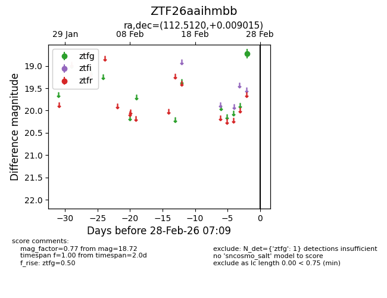
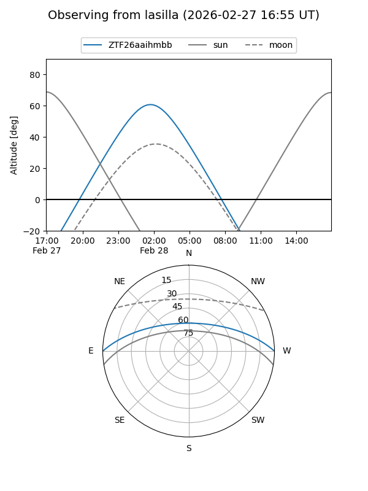
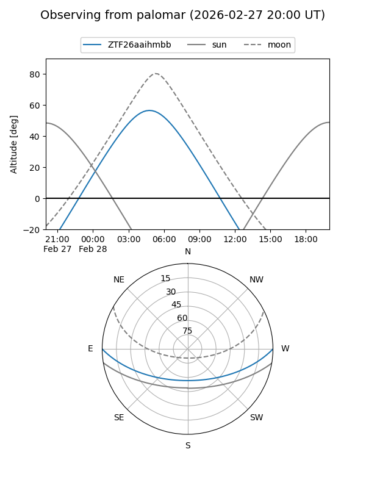

ZTF26aaihmbb
Target ZTF26aaihmbb at 2026-02-28 07:10
Aliases and brokers:
FINK: link
Lasair: link
ALeRCE: link
alt names
ZTF26aaihmbb (ztf,fink_ztf)
Coordinates:
equatorial (ra, dec) = 112.5120,+0.00902
equatorial (HMS+DMS) = 07:30:02.87,+00:00:32.45
galactic (l, b) = (217.3585,+8.58624)
Flags:
Photometry:
last ztfg=18.72
1 ztfg detections
Lightcurve

Visibility


Additional plots